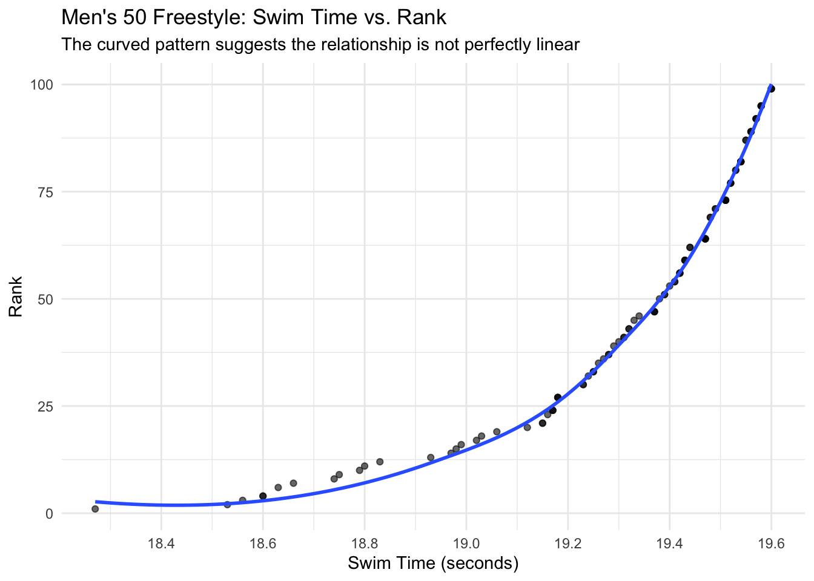
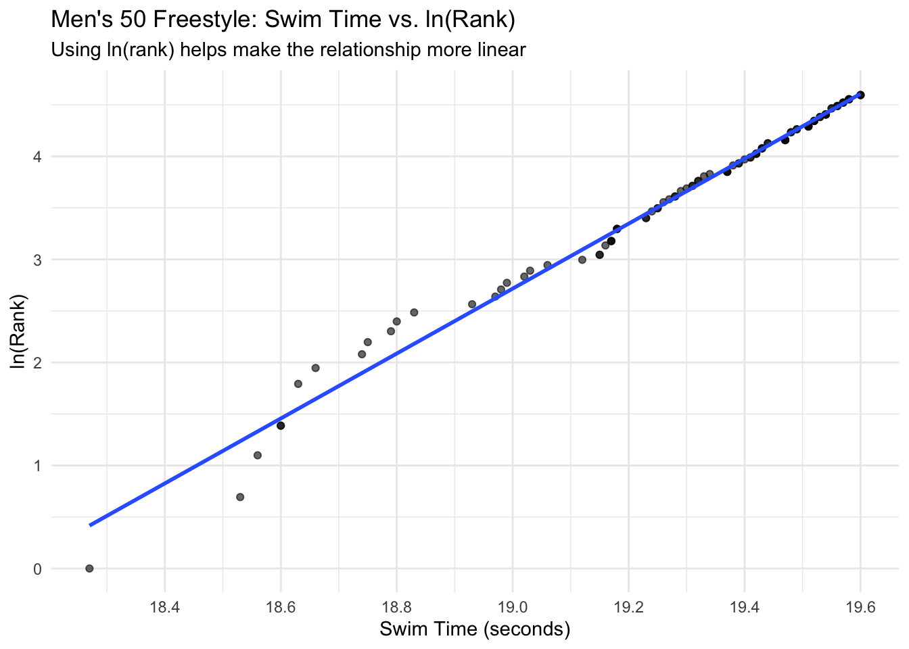

How Much Does 0.1 Seconds Matter? Time and Ranking in NCAA Men’s 50 Freestyle
Sports Analytics
Data Visualization
NCAA Swimming
R
A data visualization tutorial exploring how small differences in race time relate to rankings in NCAA men’s 50 freestyle swimming.
Authors
Affiliation
Kevin Euyoque
St. Lawrence University
Ivan Ramler
St. Lawrence University
Published
May 5, 2026
Please note that these material have not yet completed the required pedagogical and industry peer-reviews to become a published module on the SCORE Network. However, instructors are still welcome to use these materials if they are so inclined.
1 Welcome Video
If you are unfamiliar with NCAA sprint swimming, watch this short video from the 2024 NCAA Men’s 50 Freestyle Championship Final before beginning the module.
2 Introduction
In competitive swimming, races are often decided by fractions of a second. At the NCAA level, the difference between first place and fifth place can be extremely small, sometimes less than half a second. Despite these tiny margins, the outcomes can be dramatically different.
One of the best examples of this is the men’s 50 freestyle, one of the shortest and fastest events in college swimming. Because the race is so short, even a tiny mistake or improvement can noticeably change a swimmer’s finishing position.
In this module, we explore real NCAA swimming data to understand how swim time relates to ranking in the men’s 50 freestyle. Using visualization and linear regression, we investigate how much a small change such as 0.1 seconds can affect competitive performance.
We will also explore why transforming data using ln(rank) improves the regression model and helps satisfy the linearity condition.
Learning Objectives
By the end of this module, students will be able to:
Understand how performance is measured in competitive swimming
Explore how small differences in swim time impact rank
Analyze the relationship between swim time and rank in NCAA swimming
Interpret a linear regression model using a realistic 0.1-second change
Understand why transformations can improve a regression model
Activity Length
Approximately 20–30 minutes
Methods
Technology Requirement:
This activity is designed to be completed in R using RStudio or Quarto.
Students should have basic familiarity with:
reading in a dataset
using tidyverse
creating scatterplots with ggplot2
interpreting simple linear regression output
No advanced regression experience is required.
2.1 Data
This module uses a cleaned dataset of NCAA swimming performances from the Men’s 50 Freestyle SCY event.
# A tibble: 6 × 6
Event Swimmer Sex Swim_Time Rank ln_rank
<chr> <chr> <chr> <dbl> <dbl> <dbl>
1 50 Freestyle SCY Male Seeliger, Bjorn M 18.3 1 0
2 50 Freestyle SCY Male Crooks, Jordan M 18.5 2 0.693
3 50 Freestyle SCY Male Curry, Brooks M 18.6 3 1.10
4 50 Freestyle SCY Male Brownstead, Matt M 18.6 4 1.39
5 50 Freestyle SCY Male Kibler, Drew M 18.6 4 1.39
6 50 Freestyle SCY Male Auchinachie, Cameron M 18.6 6 1.79
2.4 Visualizing the Relationship
We begin with a scatterplot to explore the relationship between swim time and rank.
Code
ggplot(swim_50_free_men, aes(x = Swim_Time, y = Rank)) +geom_point(alpha =0.6) +geom_smooth(se =FALSE) +scale_x_continuous(n.breaks =8) +labs(title ="Men's 50 Freestyle: Swim Time vs. Rank",subtitle ="The curved pattern suggests the relationship is not perfectly linear",x ="Swim Time (seconds)",y ="Rank") +theme_minimal()

This scatterplot shows a clear pattern: as swim time increases, rank also tends to increase.
In swimming, this means that slower times are connected to worse rankings. Since rank 1 is the best, moving upward in rank number means finishing lower in the standings.
However, the pattern is slightly curved rather than perfectly linear. This suggests that a simple linear model using raw rank may violate the linearity condition.
Because of this, we transform rank using the natural logarithm.
2.5 Transforming the Relationship
To improve the linear relationship, we model ln(rank) instead of rank directly.
Using a logarithmic transformation helps straighten the relationship and makes the regression model more appropriate.
Code
ggplot(swim_50_free_men, aes(x = Swim_Time, y = ln_rank)) +geom_point(alpha =0.6) +geom_smooth(method ="lm", se =FALSE) +scale_x_continuous(n.breaks =8) +labs(title ="Men's 50 Freestyle: Swim Time vs. ln(Rank)",subtitle ="Using ln(rank) helps make the relationship more linear",x ="Swim Time (seconds)",y ="ln(Rank)") +theme_minimal()

After transforming rank, the relationship between swim time and performance becomes much more linear.
This is important because linear regression assumes that the response variable changes approximately linearly with the predictor.
The transformed graph shows a strong upward trend:
faster swim times correspond to better rankings
slower swim times correspond to worse rankings
even small changes in time can noticeably affect placement
2.6 Building a Linear Model
Next, we create a linear regression model using swim time to predict rank
Code
rank_model <-lm(ln_rank ~ Swim_Time, data = swim_50_free_men)summary(rank_model)
Call:
lm(formula = ln_rank ~ Swim_Time, data = swim_50_free_men)
Residuals:
Min 1Q Median 3Q Max
-0.54230 -0.03243 -0.00207 0.01609 0.31158
Coefficients:
Estimate Std. Error t value Pr(>|t|)
(Intercept) -57.15892 0.71683 -79.74 <2e-16 ***
Swim_Time 3.15134 0.03716 84.82 <2e-16 ***
---
Signif. codes: 0 '***' 0.001 '**' 0.01 '*' 0.05 '.' 0.1 ' ' 1
Residual standard error: 0.1088 on 99 degrees of freedom
Multiple R-squared: 0.9864, Adjusted R-squared: 0.9863
F-statistic: 7194 on 1 and 99 DF, p-value: < 2.2e-16
The regression output shows a strong positive relationship between swim time and ln(rank).
2.7 Interpreting the Model Output
From the regression results, the most important value is the slope for Swim_Time, which is:
3.151
Because we modeled ln(rank) instead of rank directly, this slope tells us how the logarithm of rank changes as swim time increases.
2.7.1 What Does the Slope Mean?
A 1-second increase in swim time is associated with about a 3.151 increase in ln(rank)
However, this is not very realistic in this context.
In a 50 freestyle race, a full second is an extremely large difference. NCAA swimmers are often separated by only tenths or hundredths of a second.
So instead, we interpret a 0.1-second increase.
2.8 A More Realistic Interpretation: 0.1 Seconds
Instead, we interpret a 0.1-second change, which is much more realistic in swimming.
This calculation gives a value of approximately 1.37
This means that a swimmer who is 0.1 seconds slower is predicted to have a rank about 1.37 times worse.
Because lower rank is better in swimming, even a very small increase in time can noticeably hurt a swimmer’s placement.
2.9 Model Strength
The model has an R-squared value of about 0.986.
This means that about 98.6% of the variation in ln(rank) is explained by swim time.
That is an extremely strong relationship and suggests that swim time is highly connected to ranking in the men’s 50 freestyle.
2.10 Why This Matters
The main takeaway from this analysis is that small differences in time can have a large impact on competitive results.
In the men’s 50 freestyle:
a 1-second change is unrealistically large
a 0.1-second change is more realistic
being 0.1 seconds slower is associated with a substantially worse ranking
This shows why starts, turns, reaction time, and finishing technique matter so much in sprint events. Even a tiny improvement can meaningfully change competitive results.
2.11 Conclusion
In NCAA swimming, fractions of a second are not just small details. They can strongly influence competitive outcomes.
For the men’s 50 freestyle, our model suggests that even a 0.1-second difference is associated with a meaningful worsening in rank.
By transforming rank using ln(rank), we created a model that better fits the data and more accurately represents the relationship between swim time and performance.
This makes the 50 freestyle a strong example of how statistical modeling can help explain performance differences in sports.
More broadly, this analysis demonstrates how data visualization and regression modeling can be used to better understand competitive performance in athletics.